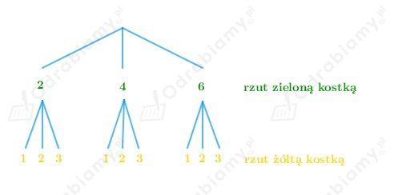
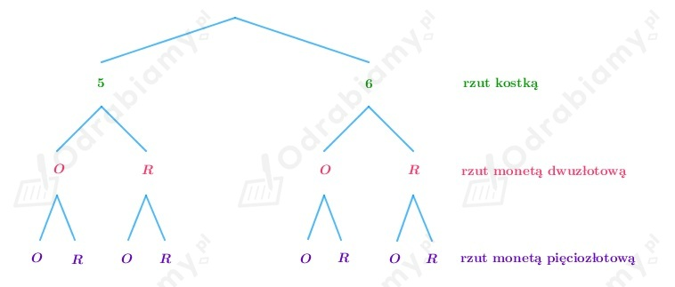

Z treści zadania wiemy, że rzucono dwiema kostkami: zieloną i żółtą.
Na zielonej kostce otrzymano parzystą liczbę oczek, natomiast na kostce żółtej - liczbę oczek mniejszą od 4.
Możliwe parzyste liczby otrzymane w wyniku rzutu zieloną kostką: 2, 4, 6.
Możliwe wyniki mniejsze od 4 w rzucie żółtą kostką: 1, 2, 3.
Wobec tego możliwych wyników w rzucie kostkami mamy łącznie: 3·3=9.
Przedstawiamy zbiór wyników doświadczenia w postaci drzewa:

Z treści zadania wiemy, że rzucono kostką oraz dwiema monetami: dwuzłotową oraz pięciozłotową.
Na kostce wypadła liczba oczek nie mniejsza niż 5, zatem mogła wypaść jedna z liczb: 5 lub 6.
Podczas rzutu kostką mamy dwie możliwe sytuacje, zatem liczba oczek może wypaść na 2 sposoby,
podczas rzutu monetą dwuzłotową i pięciozłotową otrzymamy orła albo reszkę (O lub R).
Wszystkich możliwych wyników mamy łącznie: 2·2·2=8.
Przedstawiamy zbiór wyników doświadczenia w postaci drzewa:

Tworzymy kody złożone z dwóch liter i dwóch cyfr. Cyfry i litery mogą się powtarzać.
Wykorzystujemy do tego litery: A, B, C, D, E, F, G, H, oraz cyfry: 1, 2, 3, 4, 5.
Wobec tego każdą literę do kodu możemy wybrać na 8 sposobów, natomiast każdą cyfrę możemy
wybrać na 5 sposobów.
Łącznie wszystkich możliwych kodów mamy: 8·8·5·5=1 600.
Tworzymy kody złożone z trzech liter i czterech cyfr. Cyfry i litery mogą się powtarzać.
Wykorzystujemy do tego litery: A, B, C, D, oraz cyfry: 1, 2, 3, 4, 5, 6.
Wobec tego każdą literę do kodu możemy wybrać na 4 sposoby, natomiast każdą cyfrę możemy
wybrać na 6 sposobów.
Łącznie wszystkich możliwych kodów mamy: 4·4·4·6·6·6·6=82 944.
Pani ma do dyspozycji:
Czyli Pani może wybrać kapelusz na 3 sposoby, suknię na 6 sposobów, natomiast buty na 4 sposoby.
Wnioskujemy, że Pani może się ubrać na 72 sposoby, bo: